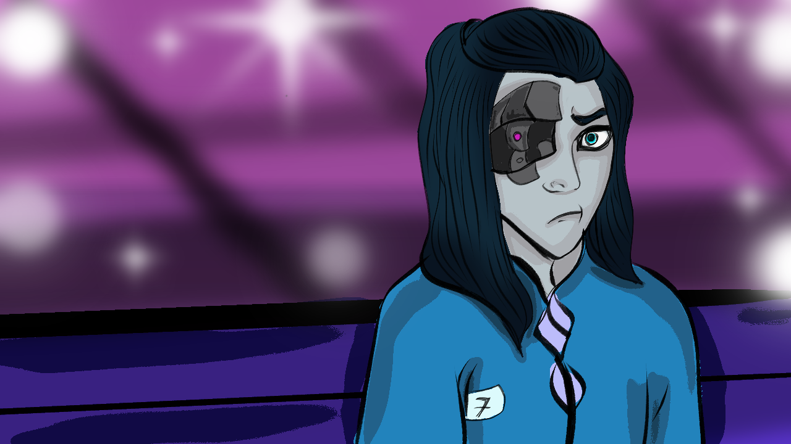

Race to Ascend is a visual novel with multiple branching choices.
You will see the world through the eyes of Ethan, the cyborg who races for Smiles to save his terminally ill sister, Nadya, and gain access to the Ascended Level. Are you willing to fight for a chance at a better life?
More to Uncover...
Multiple Endings: Choose different paths, where each choice leads to a unique ending.
Pay attention to words: dialogues can retain hidden clues and change the course of events.
Meet Assistant Silas: Meet key characters such as Silas, the mysterious Assistant who plays a key role in Ethan's journey.
Every Choice Matters: Your decisions determine Ethan's fate and the future of his world.
Language: English (with more languages to come in the future.)
Download the Demo Version of the Game!
Available for Windows and Mac OS.
Download